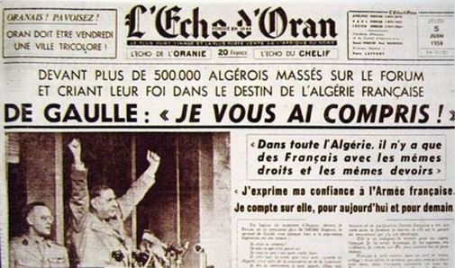
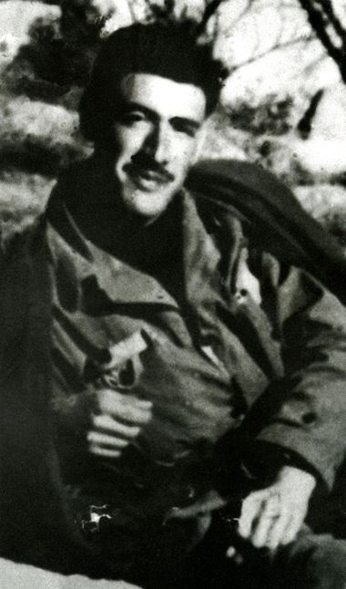
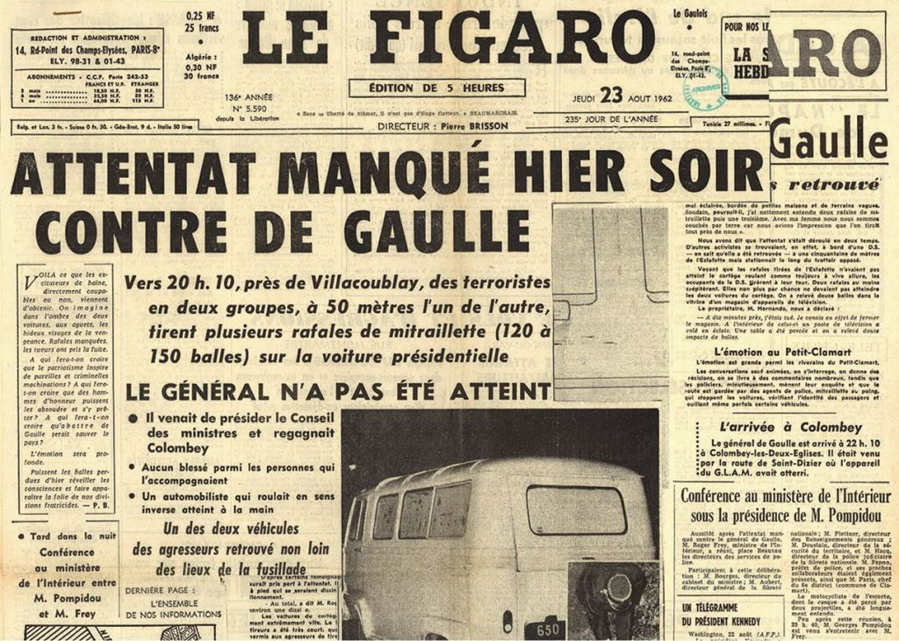
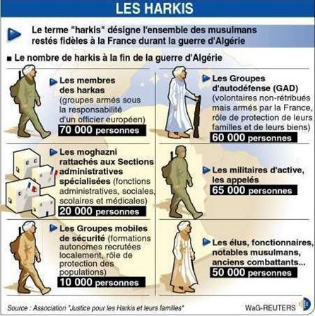

Plus de 850 pages, toujours d’une impression dense et serrée, pour ce dernier tome de la biographie de Charles de Gaulle par Jean Lacouture, éd. Points. Le volume est intitulé « Le souverain ». Il relate la période allant de 1959 à la mort du Général, survenue à La Boisserie en 1970.
La première partie de l’ouvrage est consacrée à la guerre d’Algérie, et là, Lacouture n’hésite pas à employer l’artillerie lourde pour voler au secours de son personnage :
« Nous avons tenté de découvrir un de Gaulle prenant l’affaire en mains dans un esprit d’ouverture totale. Non sans connaissances historiques, visions d’avenir ou préjugés, certes, mais disponible, s’informant, consultant, allant au contact, et résumant ses premières impressions dans une formule : « Je vous ai compris ! » qui avait l’immense mérite de ne l’engager en rien et de laisser toutes les portes ouvertes. » p.57
Evidemment si on part du principe que le fameux « Je vous ai compris ! » n’engage en rien, on peut encore jouer toutes les cartes et changer la règle du jeu en cours de partie. À ce compte-là, clamer deux jours plus tard « Vive l’Algérie française » devant des milliers de pied-noirs n’engage à rien non plus ! Si l’on en croit le biographe, de Gaulle a sur l’affaire un esprit d’ouverture, il consulte et s’informe, alors que dans le deuxième tome de son opus il avait bel et bien écrit :
(1956) « Christian Pineau a demandé à être reçu par le général, qui ne lui a pas caché que, dans son esprit, l’indépendance était, à plus ou moins brève échéance, inéluctable. Pineau raconte : « J’ai eu un haut-le-corps et je lui ai aussitôt dit : « Mais, mon Général, dites-le : ça clarifiera enfin la situation –C’est trop tôt... Pas question que je parle tant que je n’ai pas les moyens d’action » p.431 Tome II
Son opinion sur l’Algérie était déjà tranchée et sa décision prise. Le 28 août 59, il rencontre Massu :
« Massu a souligné ensuite l’importance de l’opinion des européens d’Algérie. De Gaulle a répliqué qu’il les « emm... » p.68
Lacouture, malgré lui ou contre lui, reste le prisonnier de son orientation politique, cela se ressent tout au long de l’ouvrage par le vocabulaire employé et par les périphrases déployées. L’auteur, et c’est tout à son honneur, qui travaillait au journal Le Monde et au Nouvel Observateur, ne fait pas mystère de son orientation politique. Il ne cache pas au lecteur qu’il n’hésite pas à prendre partie dans tel ou tel mouvement ; son journalisme n’est pas neutre.
À propos du coup de force des généraux (l’opération « résurrection ») l’auteur moque l’appel de Michel Debré, alors Premier Ministre :
« Que signifiait cette invocation lancée par un homme évidemment épuisé et hors de lui, incitant le peuple à se rendre sur les aérodromes « à pied ou en voiture » [...] pour bloquer la progression des envahisseurs (les parachutistes) venus d’Alger ? » p.168.
Le biographe prend soin, dans une note de bas de page, de faire savoir qu’il se rendit à l’aéroport.
Curieusement, l’opération Résurrection fut annulée in extrémis -un avion dakota était déjà en vol- le premier juin 1958 lorsque René Coty, président de la République nomma de Gaulle Premier Ministre, en menaçant de démissionner si le général refusait ! Ce qui aurait évidemment laissé la vacance du pouvoir aux militaires venus d’Alger, militaires qui avaient choisi de Gaulle !
De Gaulle courageux, de Gaulle imprudent, de Gaulle inconscient ? Au lecteur de trancher :
« À 22 heures, ce 10 juin 1960, Si Salah, son adjoint militaire Mohammed et son conseiller politique Lakhar sont introduits à l’Elysée par l’entrée de la rue de Marigny. Ils sont accompagnés par Bernard Tricot et Edouard Mathon, qui les conduisent aussitôt – ils n’ont pas été fouillés (de Gaulle s’y était opposé) dans le bureau du chef de l’État. Rappelons qu’il s’agit de trois dirigeants d’une rébellion qui lutte, les armes à la main, et par des moyens souvent atroces, contre l’État français... » p.118
Lacouture en historien presque méticuleux et en chercheur assidu note les propos de Louis Joxe, donnés dans une interview, vingt ans après la signature des accords d’Évian et le cite :
« Nous n’avons jamais pensé que les Français d’Algérie puissent partir, jamais l’hypothèse d’un départ des français n’a été évoquée, d’un côté ou de l’autre au cours de la conférence. » p.235
On peut en déduire que la négociation ne concernait pas les populations, les êtres humains ou que Louis Joxe était totalement incompétent ou qu’il n'avait pas la moindre idée du terrain et de la situation, ou bien que l’ex ministre du Général ment avec un aplomb incroyable Ces propos sont à rapprocher de ceux que cite Peyrefitte dans son « C’était de Gaulle » : au cours d’un conseil des ministres il était prévu l’arrivée de 350 000 pieds-noirs grand maximum. Les réfugiés pieds-noirs atteignirent plus ou moins le million. Cela s’appelle-t-il une totale impréparation, une lucidité totalement défaillante ou une inconscience politique et humaine ?!
Si Louis Joxe, Ministre de l’Intérieur ne se préoccupait pas du rapatriement des pieds-noirs et déclare vingt ans plus tard que jamais l’hypothèse d’un départ des français n’a été évoquée, d’un côté ou de l’autre au cours de la conférence, sa décision vis-à-vis des harkis fut sans appel, elle était tranchée d’avance. Témoins, ces deux télégrammes par lui envoyés, et que bien sûr Lacouture se garde bien de citer :
« Télégramme n. 125/IGAA – 16 mai 1962 / Ultra Secret / Stric. Confidentiel. Ministre Etat Louis Joxe demande à Haut-Commissaire rappeler que toutes initiatives individuelles tendant à installation métropole Français Musulmans sont strictement interdites. En aviser urgence tous chefs S.A.S. et commandants d’unités. »
Directive de Monsieur Louis Joxe, Ministre d’Etat :
« Je vous renvoie, au fur et à mesure, à la documentation que je reçois au sujet des supplétifs. Vous voudrez bien faire rechercher, tant dans l’armée que dans l’administration, les promoteurs et les complices de ces entreprises de rapatriement, et faire prendre les sanctions appropriées […] Je n’ignore pas que ce renvoi peut-être interprété par les propagandistes de la sédition, comme un refus d’assurer l’avenir de ceux qui nous sont demeurés fidèles. Il conviendra donc d’éviter de donner la moindre publicité à cette mesure. Signé Louis Joxe 15 juillet 1962 »
Louis Joxe fut le principal négociateur des accords d’Évian et il informait très régulièrement par téléphone le général de Gaulle de l’avancée des négociations, comme l’auteur l’écrit :
« Il faut bien dire que le défaut de la cuirasse de Charles de Gaulle, négociateur de l’Algérie, fut sa hâte d’en finir. » p.249
L’insistance avec laquelle l’auteur justifie la fin de la guerre d’Algérie, dans une optique positivement gaulliste revient inlassablement et s’égrène tout au long de l’ouvrage comme un chapelet justifiant la politique algérienne du général :
« La fin de la guerre d’Algérie va enfin permettre à la France de rentrer dans le concert des États modernes.. » (De Gaulle en conseil des ministres, printemps 62) p.407
« ...c’est donc au printemps 62 que, libéré de l’hypothèse algérienne, Charles de Gaulle accélère sa longue marche en direction de l’hémisphère sud. » p.408
« Bref, revenant aux affaires, de Gaulle avait fait de la reconnaissance de Pékin un projet à long terme, que l’apaisement –sic !- du conflit algérien pourrait permettre de réaliser tôt ou tard. » p.440
« Le ministre des armées soutenait qu’il excédait (le budget de la bombe) par trop ses moyens financiers – à moins que la nation ne mit un terme à l’entreprise militaire au sud de la méditerranée... » p.457
« Privée de l’Algérie, l’armée se voit offrir le monde de la découverte... »p.469
Lacouture parle très peu, voire pas du tout des fameux réseaux Foccart et des barbouzes gaullistes, le terme de barbouze est utilisé une fois en confrontation contre l’OAS à laquelle il donne beaucoup plus d’importance qu’au drame des harkis ou qu'à l’exil des rapatriés.
L’attentat du Petit Clamart est bien entendu relaté, mais on n’y apprend rien de nouveau. Les nouveautés dans l’affaire ne datent réellement que d’après 1985 et sont ultérieures à la publication de la biographie de Lacouture ; mais ces nouveautés, qui n’en sont pas (la taupe de l’Elysée) sont tout de même abordées.
***
Dans la partie deux de ce tome III, Lacouture nous invite à une promenade européenne dans l’Europe de Charles de Gaulle :
« Quand le projet français (gaullien ?) était d’adosser à Bonn sa propre prise de distance avec Washington, celui de la RFA était de se servir de la France comme truchement supplémentaire avec les Etats-Unis. Qu’un homme aussi perspicace que Charles de Gaulle n’ait pas senti cela, qu’il ait misé toute sa stratégie de distanciation sur un partenaire qui misait tout sur l’inféodation, restera l’un des mystères de cette mystérieuse carrière. » p.560
Mystère d'une mystérieuse carrière ou manque de lucidité politique ? Le manque de lucidité semble plus adéquat à une erreur aussi monumentale que la Porte de Brandebourg ! Pourtant, la lucidité de de Gaulle sur l’Europe américaine, ne lui faisait pas défaut :
« Les États Unis d’Europe, ce serait l’Europe des États Unis. » p.315
(La formule serait en fait de Jean-Pierre Chevènement)
Cette facette du général et cette lucidité de la mainmise des États-Unis sur l’Europe sont beaucoup plus amplement développées chez Peyrefitte. Des chiffres aussi, concernant la France à cette époque qui soulignent le redressement gaulliste de la Nation :
« Quelques chiffres sont éloquents : le taux de croissance, fixé par le plan intérimaire à 5,5 % dépassait 7 % ; la consommation des ménages en augmentation de 30 % ; le chômage réduit à moins de 30 000 ; la balance du commerce extérieur excédentaire ; les réserves de change évaluées à 4 milliards de dollars ; la hausse annuelle des prix limitée à moins de 4 %. » p.600
Bien que Louis Joxe ne prévît, de façon feinte ou réelle, aucun retour des rapatriés, ce phénomène eut pourtant bien lieu et selon l'auteur, joua sur l'équilibre économique de la métropole (c'est encore la faute des pieds-noirs !) :
« ...la pression exercée sur l’économie nationale par l’afflux soudain de plus de 650 000 rapatriés d’Algérie. » p.600.
Petit à petit on arrivera au million de rapatriés. Lacouture a toujours tendance à minimiser les chiffres concernant l’Algérie : 30 000 harkis ébouillantés ou égorgés, selon lui. Ils furent en réalité plus de 100 000, sans compter les disparus.
Comme dans les deux premiers volumes de la série, l’humour froid et pince-sans-rire du général est évoqué :
« On me traite de dictateur : a-t-on jamais vu un dictateur en ballotage ? » p.638
Ou bien visitant une exposition dans laquelle étaient mis en valeur et presque en parallèle des manuscrits de Corneille et de Charles de Gaulle. Ceux de Corneille sans aucune rature et ceux de de Gaulle, qui raturait énormément ses manuscrits, le général eut ce mot savoureux :
« Tiens, Corneille ne se relisait pas ? » p.770
Comme dans l’ouvrage de Peyrefitte, il y a aussi quelques chiffres qui montrent le décalage abyssal entre la France du temps de de Gaulle et celle d’aujourd’hui. La nuit la plus chaude de mai 68, il y eut plus de cent voitures incendiées. (P.674.) Ce qui n’arrive même pas au score d’un jour de l’an ordinaire des années 2000... Quelques erreurs de mémoire aussi en ce qui concerne mai 68 :
« ...C’est en tout cas ce que criait la foule aux cheveux longs cette nuit-là. » p.686
Les cheveux ne se portaient pas encore longs en 1968, des photos existent. L’auteur nous apprend, que lors de la manifestation communiste du 29 mai, le fait de tirer sur la foule, si les évènements débordaient était bel et bien prévu. La formule de Lacouture est par ailleurs très parlante :
« Hier, on ne pouvait pas tirer sur les étudiants, « ces héritiers ». Mais demain, si ce sont des communistes... » p.693
Comme il avait refusé de toucher sa retraite de « général », de Gaulle refusera aussi de toucher sa retraite de Chef de l’État :
« L’ancien directeur du cabinet présidentiel est chargé de faire savoir en haut lieu que le général refuse de toucher la retraite d’ancien chef de l’état, mais qu’il accepte de se voir allouer un local pour y installer son secrétariat parisien... » p.762
***
Il n’y a certainement pas eu un seul de Gaulle et Lacouture en a dégagé lui-même plusieurs. La fuite de l’Elysée en 68 et les tergiversations qui eurent lieu à cette occasion en est un des exemples le plus flagrant et le plus révélateur.
S’il y a le de Gaulle calculateur, grand politique, politicien averti et fin manœuvrier, chef historique, meneur d’hommes, il y a aussi en lui l’orgueilleux, le prétentieux et l’homme du mépris, de la rancœur. L’auteur n’hésite pas, pour qualifier son personnage, à dire qu’il fut un cyclothymique. Mais il oublie, et ce n’est pas rien, qu’il fut aussi parfois un piètre politique et un militaire dont le génie intuitif et le savoir militaire tactique ont plusieurs fois laissé à désirer !
Comment celui qui croyait dans l’armée mécanisée, les chars d’assaut, lui qui avait voulu cette force motorisée, qui insista et se démena auprès de Reynaud pour qu’elle soit ; comment un tel stratège pouvait-il croire que le réduit breton doté de quelques poteaux télégraphiques et de fossés auraient suffi à arrêter les panzers de Guderian ? Lacouture évoque à peine cette affaire du réduit breton sans en démontrer l’inconsistance. D’autres historiens l’ont amplement développée.
Que dire également sur le plan militaire et politique, d’un geste comme la fuite en Angleterre ? Outre que ce geste était plus que déraisonnable, il était par avance et de toute évidence voué à l’échec. Le hasard et les circonstances en décidèrent autrement.
Que dire aussi de la proposition faite au téléphone par de Gaulle à Raynaud et au Conseil des ministres, le 16 juin 1940, de fusionner en une seule nation la France et l’Angleterre ?
Une telle fusion, inspirée par Jean Monet, - dont de Gaulle se fera l’ennemi des idées européennes- se fait-elle en quelques heures ? Comment ne pas voir ou savoir que la France ne serait devenue qu’un dominion britannique ? La tragédie de Dunkerque n’a donc pas été suffisamment éclairante ?
Fort heureusement le gouvernement Reynaud vit tout de suite la manipulation anglaise et rejeta cette folie improvisée. Lacouture n’en souffle mot.
Que dire enfin d’un soldat qui attaque les soldats de son pays avec une force étrangère ? (Dakar, le Levant.)
Que dire du politique qui voyait, après-guerre, en l’Allemagne le principal allié pour se sortir de la gangue américaine et construire l’Europe des nations ? Alors que n’importe quel citoyen lambda savait que la RFA était un sous-marin américain, tellement visible d’ailleurs que le terme de porte-avions serait plus juste !
Que dire du lâchage de l’Algérie et du Sahara sur le plan politique, stratégique, énergétique et militaire ? Pourquoi lâcher en hâte, en toute précipitation, en cédant à toutes les demandes de l’adversaire qui n’avait alors plus de forces vives sur le terrain et était au tapis pour bien longtemps ?
Certes, beaucoup d’éléments plaident en faveur de la vision du général, pour la décolonisation de l’Algérie, mais si la précipitation d’avoir « La bombe » et de « construire l’Europe » avant de mourir (il avait alors 72 ans) ne l’avaient pas porté à du bâclage, une solution harmonieuse et certainement beaucoup plus humaine aurait pu être trouvée et développée.
S'il n'y a pas de réponses possibles à ces manquements, de Gaulle reste quand même celui qui rendit sa grandeur à la France, cela est indéniable.
Lacouture a accompli un immense travail de chercheur. Les outils du biographe sont utilisés avec brio et ceux qui sont communiqués au lecteur, le sont honnêtement, l’auteur se réservant le droit de taire des pans entiers de l’Histoire.
Mais peut-on encore parler d’Histoire à un tel niveau de silence et d’omission ?
L’historien raconte son histoire tantôt fortissimo, au son de la trompette militaire et du roulement de tambour, l’histoire est jouée allegro, mais certaines phrases musicales sont ritenente ou jouées pianissimo, parfois la musique ne dégage qu’un léger souffle, presque inaudible, de la partition de l’Histoire.
Le portrait est juste, c’est le paysage du fond qui fait que le tableau n’est pas tout à fait un chef d’œuvre symphonique. On peut tout de même écrire, après ces trois volumineux ouvrages consacrés à de Gaulle : « képi bas, bravo l’artiste ! » et à défaut d’admirer le travail d’historien, on admirera celui de bénédictin que l’auteur a accompli.
Partager cette page